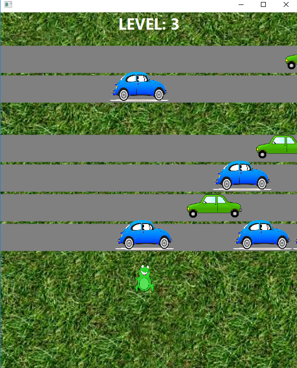

Phillip Lagoc
machine learning · student · writer
Projects
Titanic Challenge
This is my submission for Kaggle's Titanic Machine Learning challenge. With my latest submission, I have received a score of 0.77511.

Frogger
Again using JavaFX, I developed a clone of Frogger. To make game development easier for myself, I created and incorporated my own game engine, which facilitated sprite creation and hit-box detection.

Pong
Using JavaFX, I developed a clone of Pong in the span of a week. I personally created the GUI and game logic, and also implemented two-player functionality.